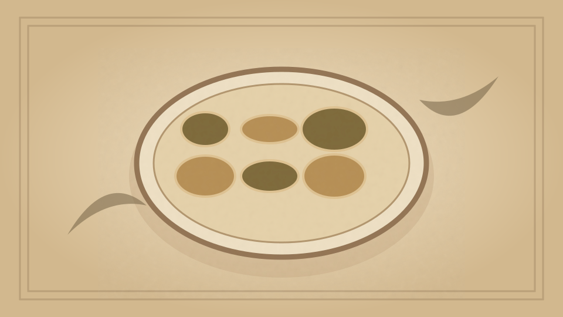

1910 · Fannie Merritt Farmer · SOUPS
Consommé
The Boston Cooking-School Cook Book

Historical Recipe
The following text is extracted from the 1910 edition, retaining historical terminology and quantities.
Original Ingredients & Directions
3 lbs. beef, poorer part of round 1 lb. marrow-bone 3 lbs. knuckle of veal 1 quart chicken stock Carrot ⅓ cup each, cut in dice Turnip Celery ⅓ cup sliced onion 2 tablespoons butter 1 tablespoon salt 1 teaspoon peppercorns 4 cloves 3 sprigs thyme 1 sprig marjoram 2 sprigs parsley ½ bay leaf 3 quarts cold water
3 lbs. beef, poorer part of round
1 lb. marrow-bone
3 lbs. knuckle of veal
1 quart chicken stock
Carrot
⅓ cup each, cut in dice
Turnip
Celery
⅓ cup sliced onion
2 tablespoons butter
1 tablespoon salt
1 teaspoon peppercorns
4 cloves
3 sprigs thyme
1 sprig marjoram
2 sprigs parsley
½ bay leaf
3 quarts cold water
Cut beef in one and one-half inch cubes, and brown one-half in some of the marrow from marrow-bone; put remaining half in kettle with cold water, add veal cut in pieces, browned meat, and bones. Let stand one-half hour. Heat slowly to boiling-point, and let simmer three hours, removing scum as it forms on top of kettle. Add one quart liquor in which a fowl was cooked, and simmer two hours. Cook carrot, turnip, onion, and celery in butter five minutes; then add to soup, with remaining seasonings. Cook one and one-half hours, strain, cool quickly, remove fat, and clear.
Automatically extracted transcription; editorial verification pending. Historical instructions may not meet modern food-safety standards.